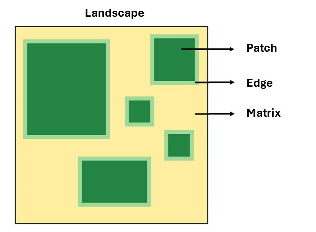
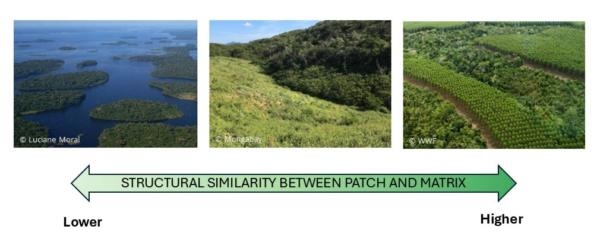

Glossary
1. Habitat - An environment with the conditions and resources necessary for the survival, establishment, and reproduction of a specific organism.2. Complementary habitat - An environment with the conditions and resources needed to complete a species' life cycle.
3. Supplementary habitat - An additional environment that provides extra resources, which are not essential to a species' life cycle.
4. Matrix - The environment adjacent to habitat fragments, such as pasture or secondary forests.
5. Edge - The area where the fragment and the matrix meet.
6. Edge effects - Changes in biotic and abiotic conditions at the edges that influence species and ecological processes.
7. Stepping stones - Intermediate areas that work as "stepping stones" connecting main habitats or larger fragments, such as small forest patches.
The expansion of human activities has increasingly led to the loss and fragmentation of different natural environments (e.g., forests, mangroves, grasslands) that are habitat for many species. Activities such as agriculture and livestock farming, the overexploitation of natural resources, and even urban expansion are ubiquitous (see Maxwell et al., 2016) and affect species in different ways.
While habitat loss is characterized by a reduction in the total amount of habitat available to species, fragmentation is the division of that habitat into smaller fragments without changing the total amount of habitat available in the landscape (Fahrig, 2003).
These two processes often occur simultaneously, transforming landscapes of continuous natural habitat into modified landscapes made up of habitat fragments surrounded by a different environment, known as the matrix (Fig. 1; Haddad et al., 2015). Understanding the role of the matrix in these modified landscapes is crucial for developing effective conservation strategies that integrate biodiversity preservation with tangible economic benefits for people.

The matrix, also called non-habitat, is the environment adjacent to the fragments and can have different degrees of structural similarity to them (Fig. 2). The type of matrix surrounding the fragments is important (Prevedello and Vieira, 2010) because the more structurally similar the matrix is to the fragments (e.g., secondary forests, tree plantations), the higher its quality. Factors such as vegetation type, degree of human disturbance, and the presence of natural elements, such as riparian corridors, influence this quality.

Depending on its quality, the matrix can:
- Influence the movement of species across the landscape
- Act as supplementary or complementary habitat for species
- Mitigate or intensify edge effects
- Serve as a source of species
- Influence the provision of ecosystem services
Species movement across the landscape
Species movement is directly linked to landscape connectivity. Connectivity, in turn, is influenced by the quality of the matrix surrounding forest fragments and by the presence of natural and semi-natural structures that facilitate movement, such as smaller fragments, trees scattered across the matrix, hedgerows, and corridors. If the matrix is structurally contrasting (i.e., of low quality), such as pasture, and there are no stepping stones, the movement of forest species is limited (Boesing et al., 2021).
This happens because many forest bird species avoid crossing open areas (see Stouffer and Bierregaard, 1995). Open matrices pose a higher risk of predation due to the lack of protective cover and the greater density of predators (Biz et al., 2017). For this reason, in these matrices birds tend to move quickly and take direct paths toward the nearest forest fragment. In contrast, in matrices that are more similar to the fragments, such as tree plantations, birds stay longer and make greater use of the available resources (see Biz et al., 2017).
Supplementary and/or complementary habitat for species
A species may seek supplementary and/or complementary habitat for several reasons, since these habitats offer a variety of resources, such as food, nesting sites, and shelter. Among these reasons is the fact that, when habitat is altered, a species can still survive by using other available habitats. Thus, using multiple habitats increases a species’ resilience to these changes.
For forest birds, understory vegetation is considered an important predictor of the diversity of this group (Aratrakorn et al., 2006), because it is where many birds can find food, shelter, and nesting sites. Therefore, matrices that are more structurally similar to the fragments and have more understory will support greater bird diversity (see Cardoso et al., 2023). In contrast, matrices that are structurally more different will offer fewer resources, which may result in lower bird diversity in forest fragments surrounded by these matrices (de Camargo Barbosa et al., 2017).
Edge effects
The matrix surrounding the fragments can also influence the intensity of edge effects that penetrate the fragments, depending on its structural similarity to them. If the matrix is structurally similar, the intensity of edge effects may be reduced. Edge effects, such as microclimatic changes, tree mortality, and edge avoidance by understory birds, are all reduced when fragments are surrounded by regenerating secondary forests, compared with fragments surrounded by pasture (see Laurance et al., 2017).
When the matrix is structurally dissimilar and edge effects are intensified, many species cannot tolerate the new abiotic and biotic conditions in the fragments and disappear. An example is the fragments of the Biological Dynamics of Forest Fragments Project (BDFFP), where many understory insectivorous forest birds disappeared when the fragments were surrounded by pasture, but returned when the matrix became regenerating Cecropia secondary forest (see Stouffer and Bierregaard, 1995).
Source of species
Just as forest fragments (i.e., forest) are habitat for some species, the surrounding matrix may be the habitat of others. For example, forest is the habitat of the white-plumed antbird, while grasslands are the habitat of the grassland sparrow. There are also habitat generalist birds, such as the southern house wren, which can live in more than one type of habitat.
When the environment is altered and the matrix is imposed, a new environment is created where the matrix and the fragment meet, called the edge. The edge can be an area of higher species richness, as it can receive species from both the matrix and the fragment interior (see Ewers et al., 2007; Magura, 2002). However, other scenarios are possible at the edge, depending on the similarity between the matrix and the fragments.
In some cases, the edge initially has higher richness, but over time, species that cannot tolerate the conditions (i.e., edge effects) in this environment disappear and are replaced by more adapted species (Russildi et al., 2016). These scenarios can occur when the matrix is pasture, as in the studies cited above.
On the other hand, it is also possible for sensitive species to disappear without being replaced, resulting in an impoverished edge. This is expected when the matrix is even more dissimilar and hostile to species, as in the case of an aquatic matrix (Watson, 2002).
Ecosystem services
Birds provide several ecosystem services. For example, insectivorous birds help control pests, frugivorous birds disperse seeds, and nectarivorous birds contribute to pollination.
In fragments surrounded by different matrices, edge conditions vary, which influences the provision of these ecosystem services by birds.
Fragments surrounded by pasture show greater structural contrast, with edges more exposed to light. These conditions may favor certain plants that offer greater availability of fruits and flowers, attracting more frugivorous and nectarivorous birds. These birds, in turn, provide seed dispersal and pollination. On the other hand, when fragments are surrounded by matrices that are more similar to the fragment, such as eucalyptus plantations, there may be a redundancy of resources. In this case, the resources available in the forest will also be present in the matrix, which may not result in a significant increase in the provision of ecosystem services (see Barros et al., 2019).
How can we increase matrix quality?
Arroyo-Rodriguez et al. (2020) suggest that, to increase matrix quality, it is necessary to maintain less contrasting matrices, such as agroforests and secondary forests, as well as to preserve scattered trees in the matrix and maintain a large number of small fragments. This will facilitate species movement across the landscape, minimize edge effects, and promote the use of the matrix by forest species.
In this same article, the authors show how it is possible to plan landscapes that pursue both biodiversity conservation and benefits for us. One example is the presence of agroforestry matrices, such as cabrucas (shade-grown cacao agroforests in Brazil’s Atlantic Forest), in modified landscapes. In addition to contributing to biodiversity conservation, these matrices also bring profit to producers.
Conclusion
The matrix plays a crucial role in fragmented landscapes. Its quality can significantly influence the richness, composition, and movement of species across the landscape, as well as the provision of ecosystem services. Considering the matrix as a key element in conservation strategies is essential for creating resilient and sustainable landscapes.